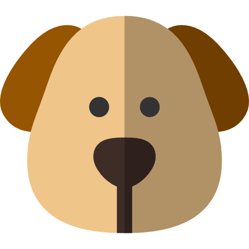

I will be adding my visual essay here shortly.
Black and Gold Mackie Studio Monitors
These studio monitors provide excellent sound quality for mixing and mastering. I find them indispensable for achieving the right mix in my productions. They have a powerful, clear output that helps in identifying subtle nuances in the mix. I would recommend them for smaller studios, but also encourage buyers to consider low-end muddiness and room acoustics.
Buy on AmazonUniversal Audio Volt 2

The Universal Audio Volt 2 is a cornerstone for my recording sessions, providing pristine audio quality with minimal latency. Great for home studios and those starting out, but watch out for its gain levels to avoid clipping.
Buy on AmazonNovation FLKey 37
This keyboard integrates seamlessly with FL Studio, making it a fantastic choice for FL Studio users. The touch response and integration features speed up my workflow significantly. I personally love using the onboard buttons to help with the dubbing process.
Buy on AmazonAkai MPC One Retro Edition
The Akai MPC One is a beat-making powerhouse. Its retro look and feel inspire creativity. It's highly recommended for anyone into beat production, though it does come with a steep learning curve. You can read more in my review article.
Buy on AmazonRode NT-1A
The Rode NT-1A is my go-to microphone for vocals due to its crystal-clear sound and low noise. Perfect for recording vocals across genres, I'd dub this a must-have for any home studio, provided you have a good pop filter.
Buy on AmazonLogitech Wave K350 Keyboard

This ergonomic keyboard helps me avoid strain during long studio sessions. Its design and key response are good, though it might not be the best choice for those preferring mechanical keyboards. It's definitely not essential, but I included it because I love it.
Buy on AmazonFL Studio 21
Having used FL Studio for years, I've grown to appreciate its unmatched Piano Roll and efficient Step Sequencer which greatly enhance my production workflow. While FL Studio 21 continues to impress with features like stem separation, it can be resource-intensive and slow, which may not suit those with less powerful setups. For an alternative with wider compatibility and efficiency, consider Ableton Live or Logic Pro.
Visit FL StudioMy Little Plush Dog
My little plush dog is a great studio companion, providing comfort and a bit of home in the studio. He doesn't really contribute to the sound, but it does help in maintaining positive vibes.